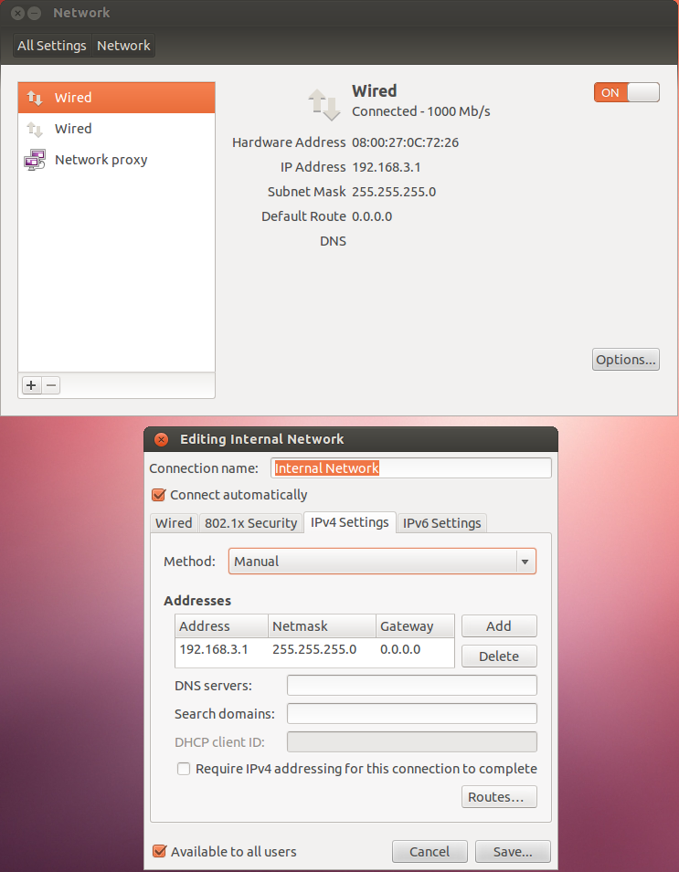
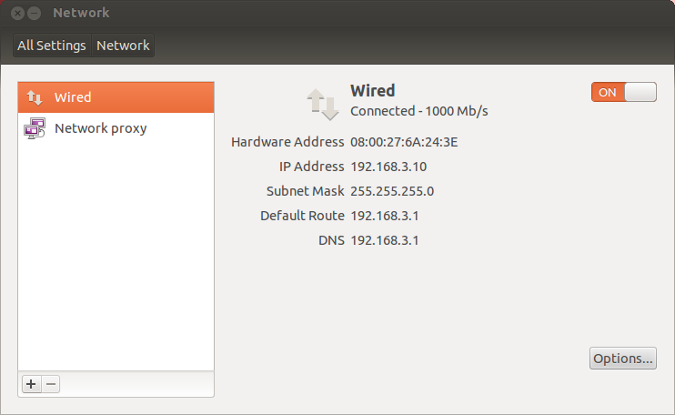

Transparently proxify virtual machines
This walkthrough illustrates how to set up transparent proxying with mitmproxy. We use VirtualBox VMs with an Ubuntu proxy machine in this example, but the general principle can be applied to other setups.
- Configure VirtualBox Network Adapters for the proxy machine
The network setup is simple:internet <--> proxy vm <--> (virtual) internal network.
For the proxy machine, eth0 represents the outgoing network. eth1 is connected to the internal network that will be proxified, using a static ip (192.168.3.1).
VirtualBox configuration:

Proxy VM: 
Configure DHCP and DNS
We use dnsmasq to provide DHCP and DNS in our internal network. Dnsmasq is a lightweight server designed to provide DNS (and optionally DHCP and TFTP) services to a small-scale network.- Before we get to that, we need to fix some Ubuntu quirks:
Ubuntu >12.04 runs an internal dnsmasq instance (listening on loopback only) by default
[1]. For our use case, this needs to be
disabled by changing
dns=dnsmasqto#dns=dnsmasqin /etc/NetworkManager/NetworkManager.conf
and runningsudo restart network-managerafterwards. - Now, dnsmasq can be be installed and configured:
sudo apt-get install dnsmasq
Replace /etc/dnsmasq.conf with the following configuration:
# Listen for DNS requests on the internal network interface=eth1 # Act as a DHCP server, assign IP addresses to clients dhcp-range=192.168.3.10,192.168.3.100,96h # Broadcast gateway and dns server information dhcp-option=option:router,192.168.3.1 dhcp-option=option:dns-server,192.168.3.1
Apply changes:
sudo service dnsmasq restart
Your proxied machine's network settings should now look similar to this: 
- Before we get to that, we need to fix some Ubuntu quirks:
Ubuntu >12.04 runs an internal dnsmasq instance (listening on loopback only) by default
[1]. For our use case, this needs to be
disabled by changing
Set up traffic redirection to mitmproxy
To redirect traffic to mitmproxy, we need to add two iptables rules:iptables -t nat -A PREROUTING -i eth1 -p tcp --dport 80 \ -j REDIRECT --to-port 8080 iptables -t nat -A PREROUTING -i eth1 -p tcp --dport 443 \ -j REDIRECT --to-port 8080If required, install the mitmproxy certificates on the test device.
Finally, we can run
mitmproxy -T.
The proxied machine cannot to leak any data outside of HTTP or DNS requests.